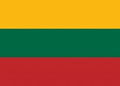
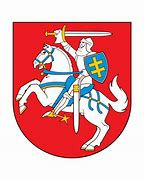

Pirmà kartà lietuviø vëliava istoriniuose ðaltiniuose minima XIV a. pabaigoje - Vygando Maburgieèio kronikoje apraðant 1337 m. kryþiuoèiø kautynes su lietuviais prie Bajerburgo pilies (Veliuona). Taèiau ten nëra nurodyta, kaip ji atrodë. Vëlensniuose istoriniuose ðaltiniuose kaip Lietuvos Diþiosios Kunigaikðtystës (LDK) vëliava apibûdinamas raudonas 1918m. Lietuvos Taryba laikinàjà Lietuvos valstybës vëliava patvirtino projektà, kuriame numatytos trys vienodo ploèio horizantalios juostos - geltona, þalia, raudona., o po to ir raudonos spalvø junginys. Geltona spalva reiðkia saulæ, ðviesà ir gerovæ, þalia simbolizuoja gamtos groþá, laisvæ ir viltá, raudona - þemæ,drasà,pralietà uþ tëvynæ kraujà.
Lietuvos Respublikos herbas yra Vytis - raudoname lauke vaizduojamas sidabrinis 6arvuotas raistelis, laikantis virð galvos iðkeltà sidabriná kalavijà su auksine rankena. Prie raitelio kairiojo peties - mëlynas skydas su dvigubu auksiniu kryþiumi. Þirgo kamanos, odiniai dirþai, balnas ir trumpa gûnia - mëlyni. Pasagos, þàslai, pentinas, balno kilpa bei odiniø dirþø metaliniai sutvirtinimai (pagraþinimai) - auksiniai.
Lietuva, Tëvyne mûsø,"
Tu didvyriø þeme,
Ið praeities Tavo sûnûs
Te stiprybæ semia.
Tegul Tavo vaikai eina
Vien takais dorybës,
Tegul dirba Tavo naudai
Ir þmoniø gërybei.
Tegul saulë Lietuvoj
Tamsumas praðalina,
Ir ðviesa, ir tiesa
Mûs þingsnius telydi.
Tegul meilë Lietuvos
Dega mûsø ðirdyse,
Vardan tos Lietuvos
Vienybë teþydi!